ML / DL Interview Preparation Notes
Table of Contents
- Mathematical Foundations
- Statistical Inference
- Core ML Concepts
- Feature Engineering & Data
- Classical ML Models
- Ensemble Methods
- Regularization & Loss Functions
- Optimization
- Neural Network Fundamentals
- Dimensionality Reduction
- Sequential Models
- NLP & Transformers
- Advanced Topics
- Amazon Applied Scientist Interview Topics
- References
1. Mathematical Foundations
1.1 Data Types
| Type | Description | Examples |
|---|---|---|
| Nominal | Categorical, no order | Colors, gender, country |
| Ordinal | Categorical, with order | Movie ratings, satisfaction (1-5) |
| Interval | Numeric, no true zero; differences meaningful | Temperature (°C), IQ scores |
| Ratio | Interval + true zero; ratios meaningful | Height, weight, income |
Variable Roles:
| Type | Description | Example |
|---|---|---|
| Dependent Variable | Outcome variable being measured; depends on the independent variable | Exam score |
| Independent Variable | Predictor/experimental variable being manipulated or controlled | Study hours |
| Dichotomous Variable | A nominal variable with exactly two categories | Yes/No, Pass/Fail |
1.2 IID — Independent and Identically Distributed
Random variables $X_1, X_2, \ldots, X_n$ are IID if: - All $X_i$ are mutually independent (outcome of one doesn't affect others) - All $X_i$ follow the same distribution
Example: Flipping a fair coin 100 times — each flip has the same probability (0.5) and is independent of all other flips.
1.3 Probability Distributions
image2.png
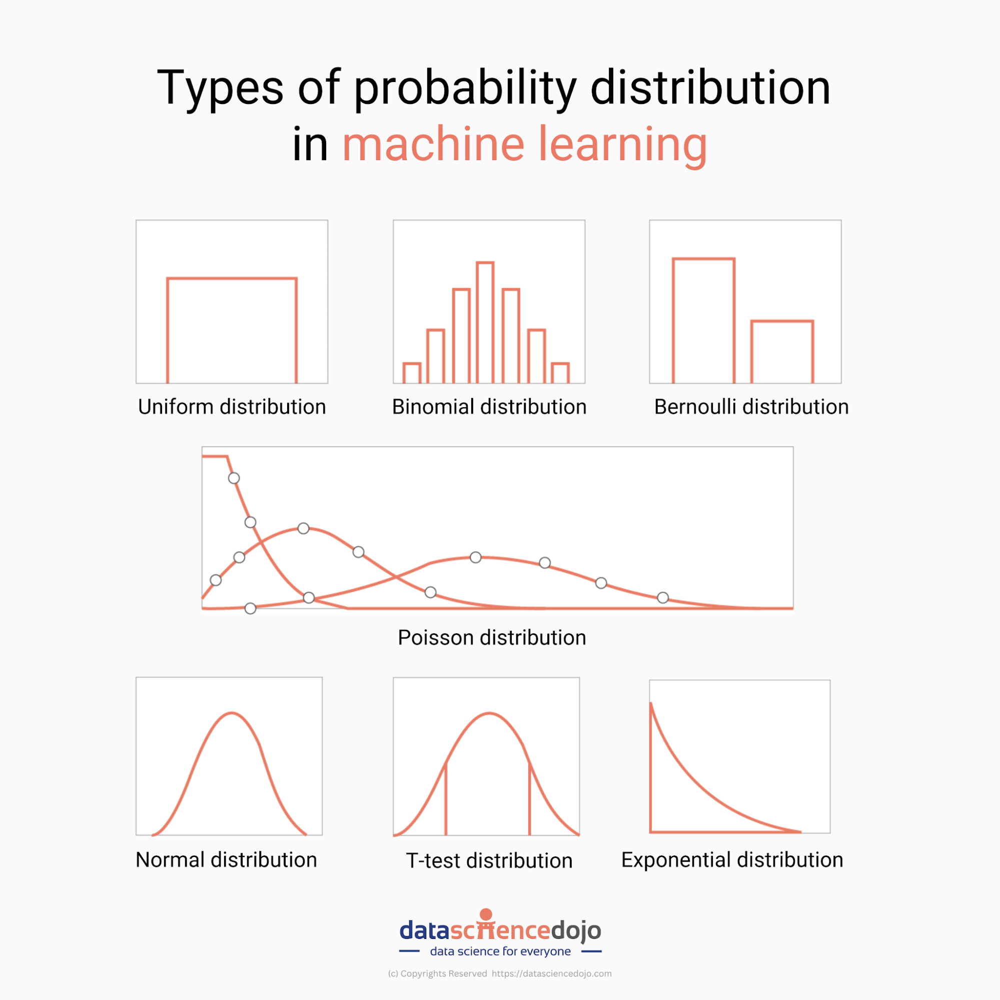
image43.png
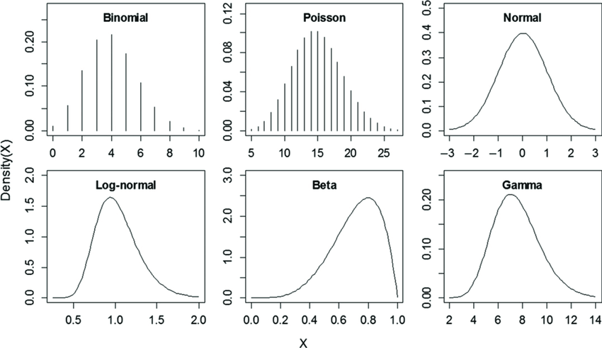
Key distributions: Uniform, Binomial, Bernoulli, Poisson, Normal, T-distribution, Exponential, Log-normal, Beta, Gamma.
1.4 Bernoulli Trial vs Binomial Distribution
- Bernoulli trial: A single experiment with only two outcomes (success/failure)
- Binomial distribution: Number of successes in a sequence of independent Bernoulli experiments
1.5 Gaussian / Normal Distribution
"Gaussian distribution" and "normal distribution" refer to the same concept.
PDF:
Standard Normal ($\mu = 0$, $\sigma = 1$):
Key Characteristics: 1. Symmetry: Symmetric around the mean 2. Bell-shaped curve 3. Mean = Median = Mode (all at center) 4. 68-95-99.7 Rule: 68% within 1σ, 95% within 2σ, 99.7% within 3σ 5. Central Limit Theorem: Sum of many independent IID random variables tends toward normal distribution
image88.png
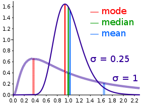
$\mu$ = mean, $\sigma$ = standard deviation, $\sigma^2$ = variance
1.6 Covariance vs Correlation
Covariance — how two variables vary together:
Correlation — how the two variables are related (normalized covariance):
| Covariance | Correlation | |
|---|---|---|
| Range | $(-\infty, +\infty)$ | $[-1, +1]$ |
| Scale-dependent | Yes | No |
| Interpretation | Direction of relationship | Direction + strength of relationship |
Why prefer correlation? It is unaffected by changes in location and scale, and allows comparison across different pairs of variables.
image79.jpg
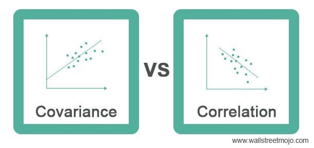
1.7 Entropy & Information Gain
Entropy — measure of uncertainty in a probability distribution:
Information Gain — reduction in entropy from splitting on attribute A:
Where: - $S$ — set of all instances in the dataset - $N$ — number of distinct class values - $p_i$ — event probability - $H(S)$ — entropy of the whole dataset S - $|S_v|$ — number of instances with value v of attribute A - $|S|$ — total number of instances in dataset S - $v$ — set of distinct values of attribute A - $S_v$ — subset of S for which attribute A has value v - $H(A,S)$ — entropy of attribute A
Example: From the total of 14 instances we have: 9 instances 'yes', 5 instances 'no'. The Entropy is:
1.8 Eigenvalues & Eigenvectors
In linear algebra, an eigenvector of a linear transformation is a non-zero vector that changes only in scale (not direction) when the transformation is applied:
- $\lambda$ = eigenvalue (the scaling factor)
- $\mathbf{v}$ = eigenvector
Finding Eigenvalues:
Example with $A = \begin{bmatrix} 0 & 1 \\ -2 & -3 \end{bmatrix}$:
Finding Eigenvectors:
For each eigenvalue, solve $(A - \lambda I)\mathbf{v} = 0$:
For $\lambda_1 = -1$: Solving gives $v_{1,1} + v_{1,2} = 0$, so $v_{1,1} = -v_{1,2}$, giving $\mathbf{v}_1 = k_1\begin{bmatrix}+1\\-1\end{bmatrix}$
For $\lambda_2 = -2$: $(A - \lambda_2 I)\mathbf{v}_2 = \begin{bmatrix}2 & 1\\-2 & -1\end{bmatrix}\begin{bmatrix}v_{2,1}\\v_{2,2}\end{bmatrix} = 0$
From row 1: $2v_{2,1} + v_{2,2} = 0 \Rightarrow v_{2,2} = -2v_{2,1}$, giving $\mathbf{v}_2 = k_2\begin{bmatrix}+1\\-2\end{bmatrix}$
2. Statistical Inference
2.1 Hypothesis Testing
A framework to make inferences about a population based on sample data.
Steps:
- Formulate Hypotheses
- $H_0$ (Null): No effect, no difference, no relationship — the status quo
-
$H_1$ (Alternative): Opposite of null; the effect/difference you suspect exists
-
Choose Significance Level (α)
- Commonly 0.05 (5%) or 0.01 (1%)
-
Probability of rejecting $H_0$ when it is actually true (Type I error)
-
Select Statistical Test — depends on data type and hypothesis
-
Calculate Test Statistic and P-Value
-
P-value = probability of observing results as extreme as the data, assuming $H_0$ is true
-
Decision Rule
- If $p \leq \alpha$: Reject $H_0$
-
If $p > \alpha$: Fail to reject $H_0$ (does NOT mean $H_0$ is true)
-
Draw Conclusions
Key Concepts:
| Error Type | Definition |
|---|---|
| Type I Error | Rejecting $H_0$ when it is actually true (false positive) |
| Type II Error | Failing to reject $H_0$ when it is actually false (false negative) |
| Power | Probability of correctly rejecting $H_0$ when it is false = $1 - P(\text{Type II})$ |
2.2 Statistical Tests: Chi-Square vs T-Test
Chi-Square Test
- Purpose: Test for significant association between categorical variables
- Types:
- Test of independence: Are two categorical variables related?
- Goodness of fit: Do observed data fit a theoretical distribution?
- Data Type: Categorical
- Assumptions: Variables are categorical; observations are independent; expected frequency in each cell ≥ 5
- Statistic:
where $O$ = observed frequency, $E$ = expected frequency.
T-Test
- Purpose: Test for significant difference between means of two groups
- Types:
- Independent t-test: Two independent groups
- Paired t-test: Two related groups (e.g., before/after)
- Data Type: Numerical (continuous)
- Assumptions: Data approximately normally distributed; equal variances; independent observations
Key Differences
| Chi-Square | T-Test | |
|---|---|---|
| Data Type | Categorical | Numerical (continuous) |
| Purpose | Association between variables | Difference in means |
| Assumptions | Categorical data, independence | Normal distribution, independence |
2.3 P-Value Calculation
Z-Test (known population std dev)
- Two-tailed: $p = 2 \times P(Z > |Z_{stat}|)$
- One-tailed: $p = P(Z > Z_{stat})$
Independent T-Test
Use t-distribution with appropriate degrees of freedom.
Chi-Square Test
ANOVA (F-Test)
General Steps: Calculate statistic → Identify distribution → Look up p-value → Compare to α → Report conclusion.
2.4 Probability vs Likelihood
image49.png

| Probability | Likelihood | |
|---|---|---|
| What varies | Data values (x) | Parameters (μ, σ) |
| What is fixed | Distribution parameters | Observed data |
| Example | $P(\text{height} > 170 \mid \mu = 170, \sigma = 3.5)$ | $\mathcal{L}(\mu, \sigma \mid \text{height} > 170)$ |
- Probability: Feature values vary; distribution parameters are fixed
- Likelihood: Parameters vary; observed data is fixed — we find which parameters best explain the observed data
2.5 Maximum Likelihood Estimation (MLE)
A probabilistic framework for density estimation — finding the mean and standard deviation of a PDF.
image44.png
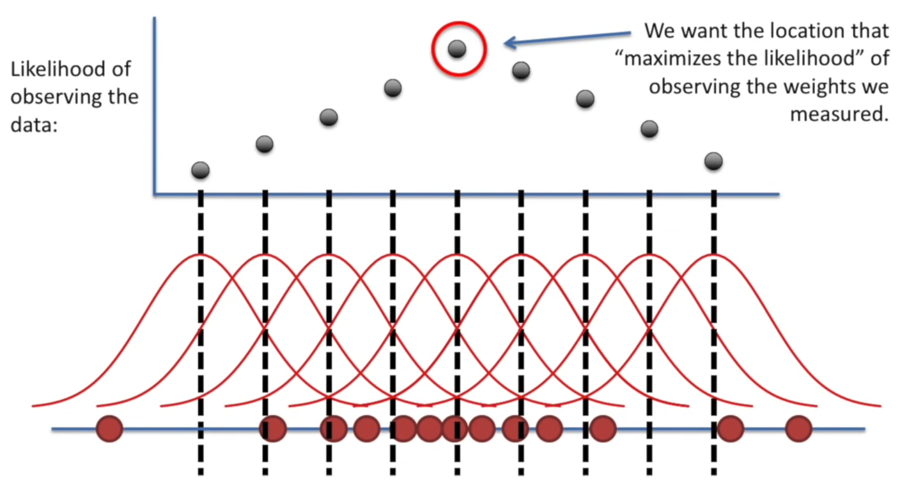
- Goal: Maximize the likelihood function to find parameters that best explain the observed data
- Provides a framework for predictive modeling where finding model parameters = optimization problem
- Used in: K-Means, linear regression, logistic regression
image86.png
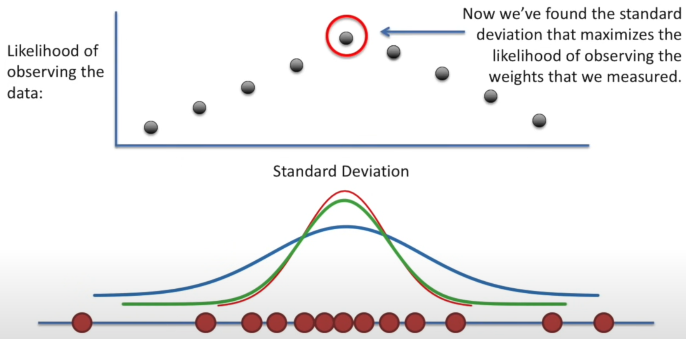
2.6 MAP vs MLE
| MLE | MAP | |
|---|---|---|
| Type | Frequentist | Bayesian |
| Prior | None (uniform assumed) | Incorporates prior belief $P(\theta)$ |
| Formula | $\arg\max \sum \log P(x_i \mid \theta)$ | $\arg\max \sum \log P(x_i \mid \theta) + \log P(\theta)$ |
| Relation | Special case of MAP | Reduces to MLE with uniform prior |
Relation Between MLE and MAP
What we could conclude then is that MLE is a special case of MAP, where the prior is uniform.
3. Core ML Concepts
3.1 Empirical Risk Minimization (ERM)
ERM is the foundational principle in machine learning: find parameters that minimize the average error (loss) on the training dataset. It is a practical substitute for minimizing the true, unattainable risk across all possible real-world data.
| Concept | Definition |
|---|---|
| Loss Function L | Quantifies the error between true output $y_i$ and predicted output $h(x_i)$ |
| True Risk R(h) | $R(h) = \mathbb{E}_{(x,y) \sim p}[L(y, h(x))]$ — uses the unknown true distribution $P$ |
| Empirical Risk $\hat{R}(h)$ | $\hat{R}(h) = \frac{1}{n} \sum_{i=1}^{n} L(y_i, h(x_i))$ — computed on training data |
| ERM Objective | $h^* = \arg\min_{h \in \mathcal{H}} \hat{R}(h)$ — find the model with the lowest average training error |
3.2 Bias-Variance Tradeoff
image56.png
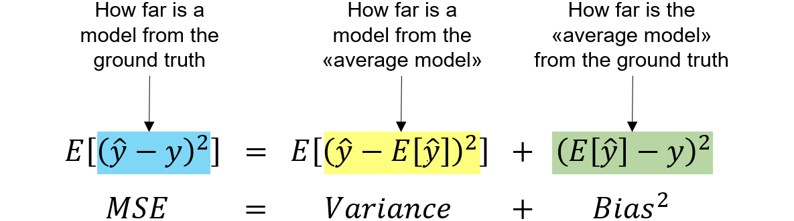
image22.png
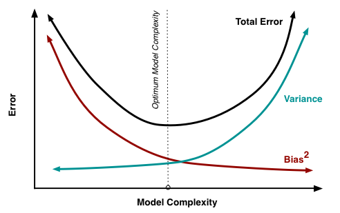
image63.png
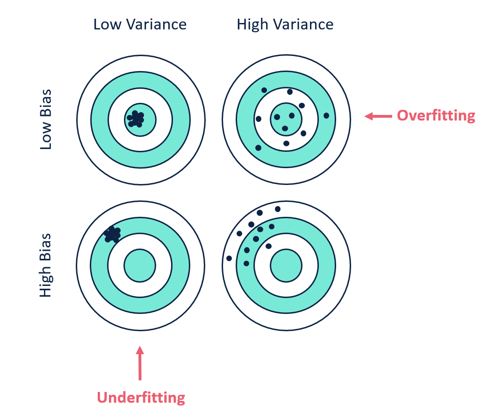
| Scenario | Bias | Variance | Effect |
|---|---|---|---|
| Underfitting | High | Low | Poor on train and test |
| Overfitting | Low | High | Good on train, poor on test |
| Ideal | Low | Low | Good generalization |
Reduce Bias (Underfitting): 1. Increase model complexity 2. Feature engineering 3. Reduce regularization 4. Increase training time
Reduce Variance (Overfitting): 1. Regularization (L1/L2) 2. Cross-validation 3. Feature selection 4. Ensemble methods 5. Early stopping 6. Data augmentation
3.3 Evaluation Metrics
image24.png
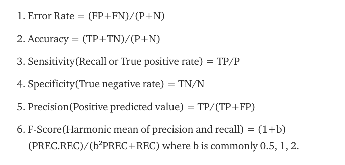
F-Beta Score — generalizes F1 with weight $\beta$ on recall:
- $\beta = 1$: Equal weight to precision and recall (standard F1)
- $\beta > 1$: More weight on recall
- $\beta < 1$: More weight on precision
F1 is preferred when: - There is class imbalance - Both precision and recall are important
3.4 Confusion Matrix
image62.png
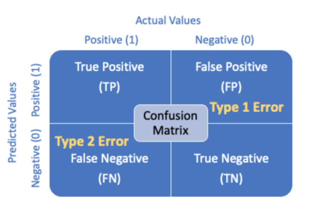
| Predicted Positive | Predicted Negative | |
|---|---|---|
| Actual Positive | TP | FN (Type II Error) |
| Actual Negative | FP (Type I Error) | TN |
- Type I Error (False Positive): Model predicts positive, but it's negative (e.g., predicts cancer when there is none)
- Type II Error (False Negative): Model predicts negative, but it's positive (e.g., misses an actual cancer case)
3.5 Micro vs Macro Averaging
| When to Use | |
|---|---|
| Equal-sized labels | Use any method |
| Imbalanced labels — bias toward most populated | Use Micro averaging |
| Imbalanced labels — equal weight to all classes | Use Macro averaging |
Micro Averaged metrics given two different set of data:
Macro Averaged metrics with two datasets:
- True Positive Rate (Sensitivity/Recall) = $TP / P$
- False Positive Rate = $1 - \text{Specificity}$ = $FP / N$
3.6 ROC Curve & AUC
ROC plots True Positive Rate (TPR) vs False Positive Rate (FPR) across all classification thresholds.
image64.png
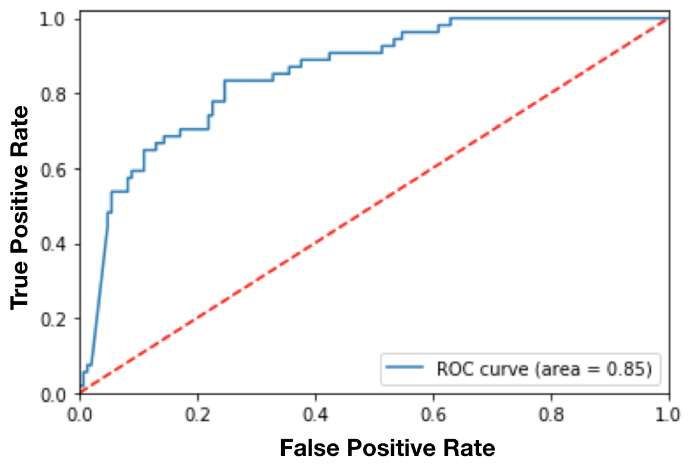
- AUC = 1.0: Perfect classifier
- AUC = 0.5: Random classifier
- AUC = 0.85: Good classifier (shown above)
3.7 R² and Adjusted R²
R² (Coefficient of Determination):
- Range: 0 to 1
- Higher = more variance explained by the model
- Limitation: Increases with more predictors even if they don't help → doesn't penalize overfitting
Adjusted R²:
where $n$ = observations, $k$ = number of predictors.
- Penalizes for adding unnecessary variables
- Only increases if the new variable improves the model beyond chance
- Can be negative
- Preferred when comparing models with different numbers of predictors
| R² | Adjusted R² | |
|---|---|---|
| Penalization | None | Penalizes unnecessary variables |
| Range | [0, 1] | $(-\infty, 1]$ |
| Use | Model fit assessment | Model comparison across different #predictors |
3.8 Cross-Validation
K-Fold Cross-Validation: - Split data into k folds; train k-1, test on remaining fold - Repeat k times, average results - During inference, uses all k models
Leave-One-Out (LOO): - k = n (number of data points) - One test point per fold - Suitable for small datasets
4. Feature Engineering & Data
4.1 Feature Scaling
image25.png
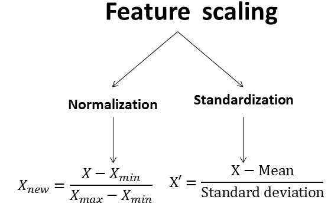
Normalization (Min-Max Scaling):
Standardization (Z-score):
When to Use:
| Method | Use When |
|---|---|
| Normalization | Data does NOT follow Gaussian distribution; algorithms like KNN, Neural Networks |
| Standardization | Data follows Gaussian distribution; robust to outliers; SVM, Linear Regression |
Why Feature Scaling Matters: - Required when features have very different ranges - Helps gradient descent converge faster - Distance-based algorithms are dominated by large-magnitude features without scaling - Prevents weight explosions during training
4.2 Curse of Dimensionality
As the number of features/dimensions increases with a fixed training set size: - Performance initially improves, then degrades beyond a certain dimensionality - With more features than observations → risk of massively overfitting - Distance-based methods lose meaning (all points become equidistant in high dimensions)
Rules of thumb: - At least 5 training examples per dimension - Use PCA to reduce dimensionality before modeling
5. Classical ML Models
5.1 Nonparametric Models
Models that do not assume a fixed form for the underlying data distribution — the number of parameters grows with data.
| Model | Description |
|---|---|
| k-Nearest Neighbors (k-NN) | Predicts based on k closest training examples; no functional form assumed |
| Decision Trees | Recursively splits data; complexity grows with data size |
| Kernel Density Estimation (KDE) | Estimates PDF by averaging kernel functions centered at each data point |
| Gaussian Processes (GP) | Defines distribution over functions; complexity grows with data |
| Random Forests | Ensemble of decision trees; depth and count can vary |
| SVM with Non-linear Kernels | RBF kernel behaves nonparametrically |
5.2 Naive Bayes
Why "Naive"? It assumes absolute independence of features — a condition virtually never met in real-world data.
Bayes' Theorem:
image75.png
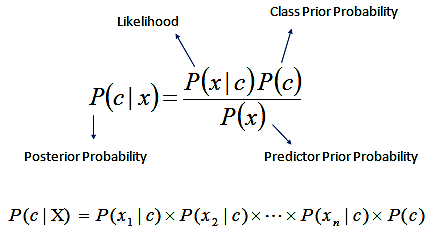
where: - $P(c \mid x)$ = Posterior Probability (probability of class given data) - $P(x \mid c)$ = Likelihood (probability of data given class) - $P(c)$ = Class Prior Probability - $P(x)$ = Predictor Prior Probability (evidence — normalising constant)
With the naive independence assumption:
Types:
| Naive Bayes Type | Likelihood Model | Use Case |
|---|---|---|
| Multinomial NB | Count of word/token occurrences | Text classification (word counts) |
| Gaussian NB | Gaussian distribution: $P(x\|c) = \mathcal{N}(\mu_c, \sigma_c^2)$ | Continuous features |
| Bernoulli NB | Bernoulli (presence/absence of feature) | Binary feature vectors |
Gaussian Naive Bayes:
5.3 KNN vs K-Means
| KNN | K-Means | |
|---|---|---|
| Type | Supervised | Unsupervised |
| Task | Classification | Clustering |
| k | Number of neighbors | Number of clusters |
5.4 Decision Trees
Information Gain guides splits (see §1.7).
image40.png
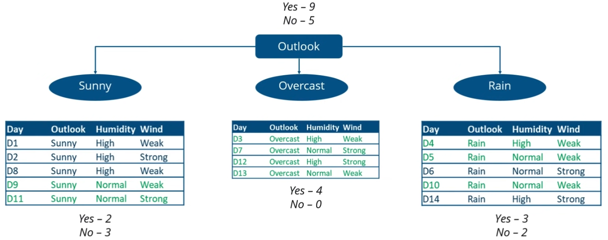
image55.png
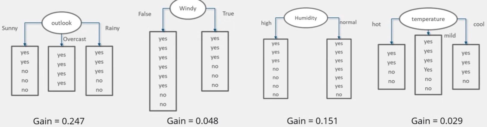
Overfitting in Decision Trees: - Trees can form a branch for each data point → no generalization - Fix: Pruning — remove parts of tree that don't improve classification power
Pruning: Reduces tree size by removing subtrees that add no predictive value.
Decision Tree vs Random Forest:
| Decision Tree | Random Forest | |
|---|---|---|
| Interpretability | Simple, explainable | Black box |
| Accuracy trend | Improves with more splits → prone to overfitting | Improves with more trees until it plateaus |
| Feature selection | Considers all features at each split | Considers random feature subset at each split |
| Use when | Need simplicity/explainability; small dataset | Need accuracy and robustness; large dataset |
Random Forest is a black box — specify
n_estimators(number of trees) andmax_features; accuracy improves with more trees until it plateaus and stops changing.
5.5 Ordinal Regression
Train binary classifiers for each threshold, then combine:
Binary target = 1 if rating > 1 → model predicts P(Target > 1)
Binary target = 1 if rating > 2 → model predicts P(Target > 2)
Binary target = 1 if rating > 3 → model predicts P(Target > 3)
Binary target = 1 if rating > 4 → model predicts P(Target > 4)
Convert to class probabilities:
image50.png
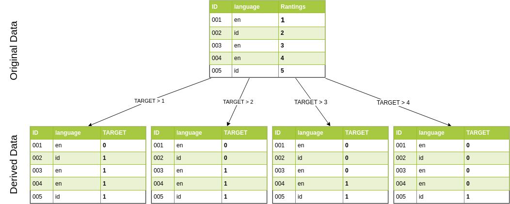
image65.png
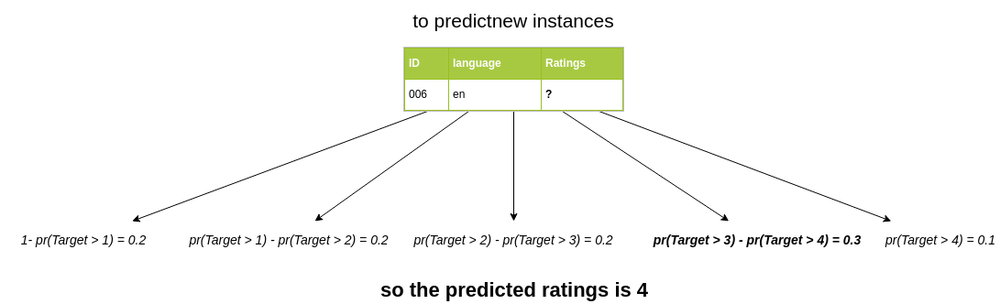
5.6 Support Vector Machines (SVM)
Core Concepts:
- Hyperplane: Decision boundary separating classes. In 2D it's a line; in higher dimensions, a flat affine subspace.
- Support Vectors: Data points closest to the hyperplane — they determine its position and orientation.
- Margin: Distance between hyperplane and nearest support vectors. SVM maximizes this margin.
- Kernel Trick: Transforms input data to a higher-dimensional space to find a separating hyperplane without explicitly computing coordinates.
SVM Objective (with C regularization):
Hypothesis:
Kernels:
| Kernel | Formula | Use Case |
|---|---|---|
| Linear | $k(x,y) = x^T y$ | Linearly separable data |
| Polynomial | $k(x,y) = (x^T y)^p$ | Non-linear data |
| RBF / Gaussian | $k(x,y) = \exp\!\left(-\frac{\|x-y\|^2}{2\sigma^2}\right)$ | Non-linear, high-dimensional data |
| Sigmoid | $k(x,y) = \tanh(\alpha x^T y + c)$ | Proxy for neural networks |
Why Gaussian RBF maps to infinite-dimensional space:
With $m$ distinct training points, the Gaussian RBF kernel makes the SVM operate in an $m$-dimensional space. As training data grows, this space grows without bound — effectively mapping inputs to infinite dimensions without explicitly computing those coordinates.
C Parameter (Regularization): - Small C → wider margin, more misclassifications allowed (softer boundary) - Large C → narrower margin, fewer misclassifications (harder boundary)
Support Vector Regression (SVR): Regression counterpart — fits data within a margin of tolerance.
6. Ensemble Methods
Ensemble learning combines multiple weak learners to produce a stronger model.
6.1 Random Forest vs Bagging
Both use Bootstrap Sampling: - Each tree trains on a random sample of data with replacement - Some data points repeat; some are omitted
Key Difference — Feature Selection:
| Random Forest | Bagging | |
|---|---|---|
| At each split | Randomly selects a subset of features | Considers all features |
| Correlation | Reduces inter-model correlation more effectively | Higher correlation between models |
Random Forest's feature subsampling is the core addition over plain Bagging.
6.2 Bagging vs Boosting
image69.png
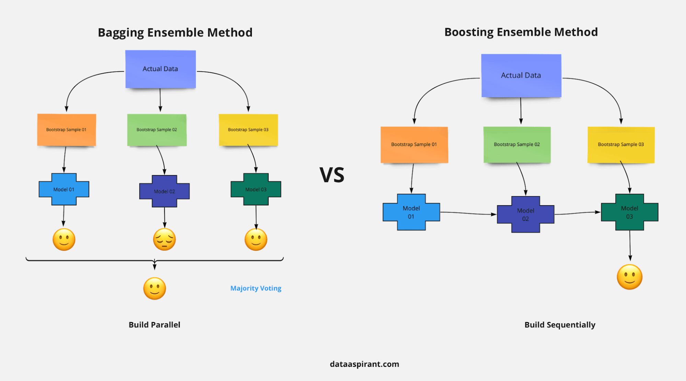
| Bagging | Boosting | |
|---|---|---|
| Similarities |
• Uses voting • Combines models of the same type |
|
| Differences | Individual models are built separately | Each new model is influenced by the performance of those built previously |
| Equal weight is given to all models | Weights a model's contribution by its performance | |
Bagging Details: 1. Generate multiple bootstrap samples from training data 2. Train a separate model on each sample (independently, in parallel) 3. Combine predictions (average for regression, vote for classification)
Boosting Details: 1. Initialize weights equally 2. Train first weak learner 3. Increase weights of misclassified instances 4. Train next model on re-weighted data 5. Repeat → combine all models with weighted voting
Summary: Bagging mainly focuses on getting an ensemble model with less variance than its components; boosting mainly tries to produce strong models less biased than their components.
6.3 Boosting Variants
Three main types: Gradient Boosting, AdaBoost, XGBoost ("eXtreme Gradient Boosting").
| AdaBoost | Gradient Boosting | |
|---|---|---|
| Weight update | Increases weights of misclassified samples each iteration | Updates by computing negative gradient of loss function |
| Base learners | Decision stumps (single split) | Wide range: trees, linear models, etc. |
| Noise sensitivity | More susceptible — assigns high weights to misclassified points | More robust — gradient updates are less sensitive to outliers |
6.4 XGBoost vs Random Forest
| XGBoost | Random Forest | |
|---|---|---|
| Algorithm | Sequential gradient boosting | Parallel bagging of decision trees |
| Accuracy | Generally higher on structured/tabular data | Solid baseline, competitive |
| Speed | Optimized with parallelization + hardware acceleration | Slower prediction with many trees |
| Tuning | Requires careful tuning | Minimal tuning needed |
| Regularization | Built-in L1 (Lasso) and L2 (Ridge) | None built-in |
| Overfitting | Can overfit on small datasets if not regularized | More robust via averaging |
| Interpretability | Feature importance available | Feature importance available, but less interpretable overall |
| Use cases | Competitive ML, large structured datasets | Quick robust baseline, many problem types |
Summary: - Random Forest: Quick, robust, out-of-the-box. Good when you need a reliable model with minimal tuning. - XGBoost: Superior performance on complex datasets, but requires more careful tuning.
7. Regularization & Loss Functions
7.1 L1 vs L2 Regularization
| L1 Regularization | L2 Regularization |
|---|---|
| Penalizes the sum of absolute value of weights. | Penalizes the sum of square weights. |
| It has a sparse solution. | It has a non-sparse solution. |
| It gives multiple solutions. | It has only one solution. |
| Constructed in feature selection. | No feature selection. |
| Robust to outliers. | Not robust to outliers. |
| It generates simple and interpretable models. | It gives more accurate predictions when the output variable is the function of whole input variables. |
| Unable to learn complex data patterns. | Able to learn complex data patterns. |
| Computationally inefficient over non-sparse conditions. | Computationally efficient because of having analytical solutions. |
L1 is not differentiable at 0:
Subgradient methods are used to handle this.
image34.png
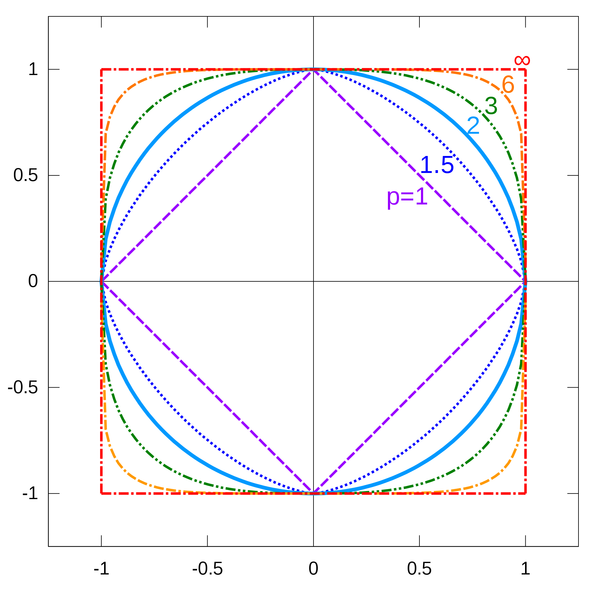
image52.jpg
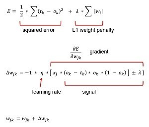
7.2 Loss Functions
Regression Losses:
| Loss Function | Description | Formula |
|---|---|---|
| Mean Bias Error (MBE) | Captures average bias; rarely used for training | $\frac{1}{N}\sum_{i=1}^N (y_i - f(x_i))$ |
| Mean Absolute Error (MAE) | Measures absolute bias; also called L1 Loss | $\frac{1}{N}\sum_{i=1}^N \|y_i - f(x_i)\|$ |
| Mean Squared Error (MSE) | Average squared distance; also called L2 Loss | $\frac{1}{N}\sum_{i=1}^N (y_i - f(x_i))^2$ |
| Root MSE (RMSE) | Square root of MSE; same units as dependent variable | $\sqrt{\frac{1}{N}\sum_{i=1}^N (y_i - f(x_i))^2}$ |
| Huber Loss | Combines MSE and MAE; less sensitive to outliers | $\frac{1}{2}(y - f(x))^2$ if $\|y-f(x)\| \leq \delta$, else $\delta\|y-f(x)\| - \frac{\delta^2}{2}$ |
| Log-Cosh Loss | Like Huber but smooth everywhere; computationally expensive | $\frac{1}{N}\sum \log(\cosh(f(x_i) - y_i))$ |
Classification Losses:
| Loss Function | Description | Formula |
|---|---|---|
| Binary Cross-Entropy (BCE) | Loss function for binary classification | $-\frac{1}{N}\sum_{i=1}^N \left[y_i\log(p_i) + (1-y_i)\log(1-p_i)\right]$ |
| Hinge Loss | Penalizes wrong and less confident predictions; used in SVMs | $\max(0, 1 - f(x) \cdot y)$ |
| Cross-Entropy (multi-class) | Extension of BCE; $N$ samples, $M$ classes | $-\sum_{i=1}^N\sum_{j=1}^M y_{ij}\log(f(x_i)_j)$ |
| KL Divergence | Minimises divergence between predicted and true distribution | $\sum_x f(x)\log\frac{f(x)}{y(x)}$ |
Softmax converts raw scores $s$ into probabilities before Cross-Entropy Loss is applied:
-
Hinge Loss (SVM): $\mathcal{L} = \max(0, 1 - y \cdot \hat{y})$
-
Triplet Loss (Siamese Networks / face recognition) — uses Euclidean distance to push anchor (A) closer to positive (P) and away from negative (N):
- KL Divergence: See §12.8
7.3 Convex vs Non-Convex Problems
Convex Problems (guaranteed global minimum): 1. Linear Regression 2. Logistic Regression 3. Support Vector Machines (SVM) 4. Ridge and Lasso Regression
Non-Convex Problems (risk of local minima): - Neural Networks - Clustering (e.g., K-Means)
8. Optimization
8.1 Gradient Descent Variants
image4.png
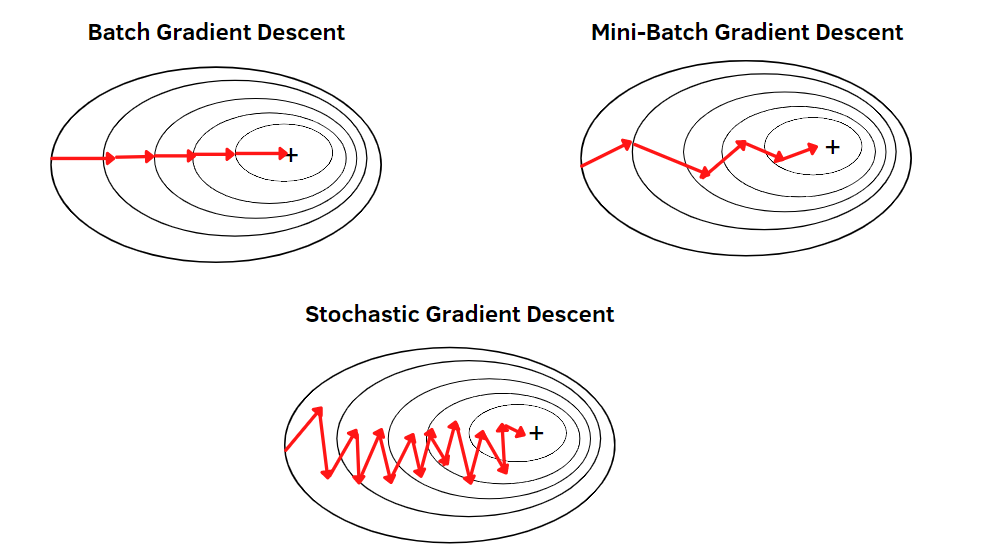
| Variant | Data Used Per Update | Convergence | Notes |
|---|---|---|---|
| Batch GD | Entire dataset | Smooth, slow | Deterministic; cost reduces smoothly; very high computation cost |
| Stochastic GD (SGD) | Single sample | Fast but noisy | Lots of variation in cost function; computation time is more |
| Mini-Batch GD | Small batch | Balanced | Smoother than SGD; lower compute cost than Batch GD |
Cost Function – "One Half Mean Squared Error":
Objective:
Update rules:
Derivatives:
image26.png
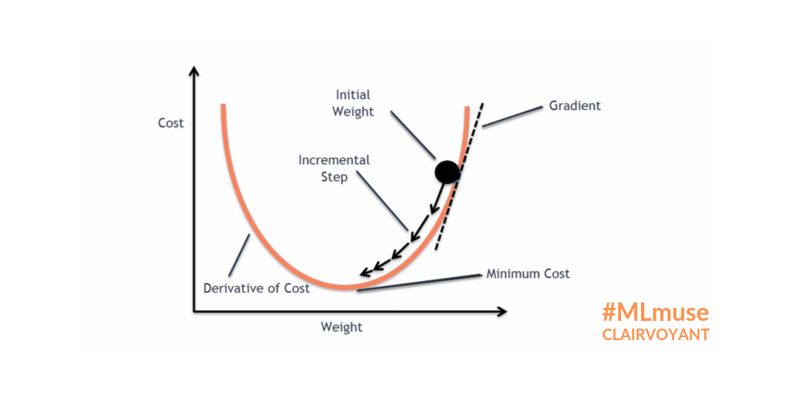
Batch GD vs Stochastic GD — Comparison:
| Batch Gradient Descent | Stochastic Gradient Descent |
|---|---|
| Computes gradient using the whole training sample | Computes gradient using a single training sample |
| Slow to converge; expensive computation | Faster convergence with lower computation overhead |
| Not applicable to large/huge samples | Can be applied to large samples |
| Deterministic in nature | Stochastic in nature |
| Produces an optimal solution | Produces a good but not necessarily optimal solution |
| No need to shuffle training data | Requires shuffling of training data |
| Can't escape local minima | Can escape local minima |
| Slow convergence | Much faster convergence |
| Weights updated after the entire dataset | Weights updated after each data point |
| Fixed learning rate | Adjustable learning rate |
| Converges to global minimum (convex) / may get stuck in local minimum (non-convex) | May converge to local or global minimum |
| Suffers from overfitting if model is too complex | Helps in reducing overfitting |
8.2 Optimizers — Full Comparison
| Optimizer | Description | Learning Rate | Memory | Convergence | Pros | Cons |
|---|---|---|---|---|---|---|
| Gradient Descent | Basic, uses full dataset | Fixed | Low | Slow | Simple | Slow for large data |
| SGD | Single sample per update | Fixed | Low | Fast | Fast, online learning | High variance, noisy |
| Mini-batch GD | Small batch per update | Fixed | Low | Moderate | Reduces variance | Batch size tuning needed |
| Momentum | Adds fraction of previous update | Fixed | Moderate | Fast | Reduces oscillations | Momentum param tuning |
| NAG | Looks ahead before updating | Fixed | Moderate | Fast | Corrects momentum overshoot | Careful tuning needed |
| Adagrad | Per-parameter adaptive LR from past gradients | Decreasing | High | Moderate | Auto LR adjust; good for sparse data | LR shrinks too small |
| Adadelta | Limits Adagrad's gradient accumulation | Adaptive | Moderate | Moderate | Fixes Adagrad's LR decay | More complex |
| RMSprop | Moving average of squared gradients | Adaptive | Moderate | Fast | Good for non-stationary data | Decay param tuning |
| Adam | RMSprop + Momentum combined | Adaptive | High | Fast | Best default choice; adaptive LR | Multiple params to tune |
| Nadam | Adam + NAG | Adaptive | High | Fast | Adam benefits + NAG correction | Multiple params |
| AdaMax | Adam with infinity norm | Adaptive | High | Fast | Stable; good alternative to Adam | Still needs tuning |
| SGD + Warm Restarts | Periodic LR resets | Cyclical | Low | Fast | Escapes local minima | Restart schedule tuning |
| Lookahead | "Looks ahead" at future updates | Adaptive | High | Fast | Enhances any base optimizer | Added complexity |
Summary by category: - Basic: GD, SGD, Mini-Batch — simple but need extensive tuning - Momentum-based: Momentum, NAG, Lookahead — faster convergence - Adaptive LR: Adagrad, Adadelta, RMSprop, Adam, Nadam, AdaMax — best for most deep learning tasks
8.3 Hyperparameter Optimization
Methods (increasing efficiency):
- Manual Search — try, observe, adjust based on intuition
- Grid Search — exhaustive search over all combinations; independent of past evaluations
- Random Search — random sampling; independent of past evaluations; often better than grid search
- Bayesian Optimization — builds a probability model of objective function; uses past evaluations to guide next search
Bayesian Optimization (most efficient):
image70.png
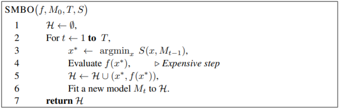
- Builds a surrogate probabilistic model of the objective function
- Balances exploitation (known good regions) vs exploration (uncertain regions)
- Past performance directly informs future hyperparameter choices
- Unlike Grid/Random Search which are memoryless
"Bayesian Optimization is like Manual Search — the performance of past hyperparameter choices affects the future decision."
8.4 Early Stopping
Stop training once validation performance starts degrading — prevents overfitting by not letting the model over-learn the training data.
9. Neural Network Fundamentals
9.1 Non-Linearity
Linearity requires: 1. Homogeneity of degree 1: $f(ax) = af(x)$ 2. Additivity: $f(x + y) = f(x) + f(y)$
Why non-linearity is necessary: - Without non-linear activation functions, a deep network collapses into a single linear transformation regardless of depth - Allows learning complex, non-linear decision boundaries - Enables approximating any function (Universal Approximation Theorem)
Common non-linear functions: polynomial feature maps, ReLU, Sigmoid, Tanh.
9.2 Activation Functions
Desirable Properties:
| Property | Why It Matters |
|---|---|
| Non-linearity | Enables modeling non-linear relationships |
| Differentiable (continuous) | Required for gradient-based optimization |
| Bounded range | Finite range → more stable gradient updates |
| Monotonic | Guarantees convex error surface for single-layer models |
| Approximates identity near origin | Allows efficient training with small random initial weights |
| Output symmetric at zero | Prevents gradients from consistently biasing in one direction |
Activation Functions Reference:
image16.png
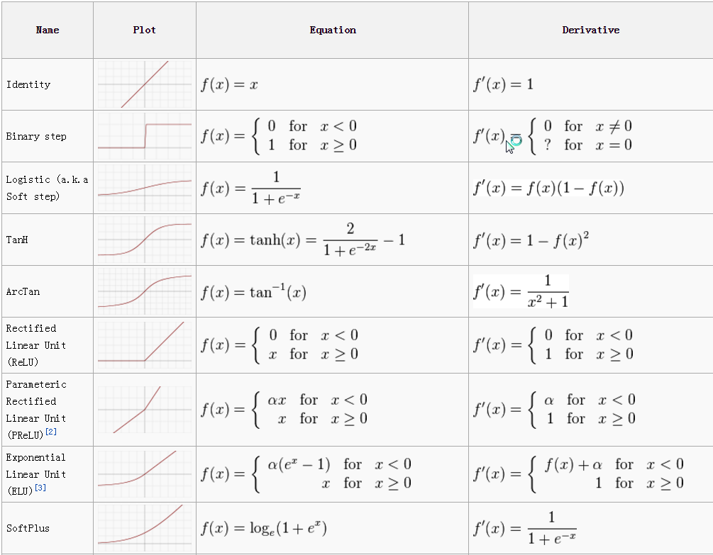
image81.png
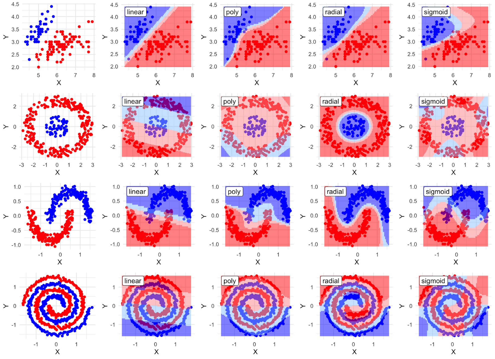
Common Activation Functions:
| Function | Formula | Properties |
|---|---|---|
| Sigmoid | $\sigma(x) = \frac{1}{1 + e^{-x}}$ | Range (0,1); suffers from saturation/vanishing gradients |
| Tanh | $\tanh(x) = \frac{e^x - e^{-x}}{e^x + e^{-x}}$ | Range (-1,1); zero-centered; still saturates |
| ReLU | $f(x) = \max(0, x)$ | Fast; no saturation for positive values; dying ReLU problem |
| Leaky ReLU | $f(x) = \max(\alpha x, x)$ | Fixes dying ReLU |
| ELU | $f(x) = x$ if $x > 0$, else $\alpha(e^x - 1)$ | Smooth; negative values push mean toward zero |
image20.png
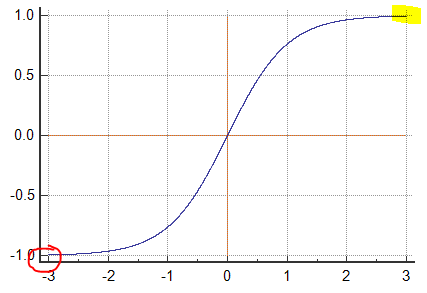
9.3 Gradient Saturation
When using sigmoid or tanh: - After training for many epochs, neuron linear parts output very large or small values - The input to the activation function is far from center → gradient ≈ 0 - Weights update extremely slowly → learning stalls
ReLU fix: No saturation for positive inputs → gradient is constant (1) for $x > 0$, enabling faster convergence with SGD.
"The biggest advantage of ReLU is non-saturation of its gradient, which greatly accelerates the convergence of stochastic gradient descent compared to sigmoid/tanh."
9.4 Multi-Layer Perceptron (MLP)
MLP is a fully connected feed-forward network. It is NOT: - CNN (partially connected) - RNN (has feedback loops)
Feed-Forward Architecture: Signal travels strictly input → hidden → output. No cycles.
Types of Feed-Forward Networks: - Fully connected MLPs - Fully Convolutional NNs - CNNs + fully connected layers
Recurrent Networks (not feed-forward): - Vanilla RNN — suffers from vanishing/exploding gradients - LSTM - GRU - RCNN
Memory-Augmented Networks: - Neural Turing Machines (NTM) - Differentiable Neural Computers (DNC)
9.5 Feed-Forward vs Backpropagation
| Feed-Forward | Backpropagation | |
|---|---|---|
| Purpose | Compute output from input | Adjust weights by propagating error |
| Input | Input vector | Output vector + target output |
| Output | Output vector | Adjusted weight vector |
| When used | Both training and inference | Only during training |
9.6 Vanishing & Exploding Gradients
Vanishing Gradients: - Gradients of early layers are products of later-layer gradients - If later gradients < 1, their product vanishes → early layers learn very slowly - RNNs particularly susceptible on long sequences - LSTM was invented to solve this
Exploding Gradients: - Gradients grow exponentially → model produces NaN weights
Fixes:
| Problem | Solution |
|---|---|
| Vanishing | Weight regularization, use LSTM, use ReLU activations |
| Exploding | Gradient Clipping (cap gradients at a threshold) |
9.7 Weight Initialization
| Initialization | Best For | Why |
|---|---|---|
| Xavier (Glorot) | Sigmoid, Tanh | Keeps variance stable across sigmoid-like layers |
| He | ReLU | Accounts for ReLU zeroing half of inputs |
9.8 Batch Normalization
Purpose: Improve performance and stability by normalizing layer inputs to have mean ≈ 0 and std ≈ 1.
Formula:
Placement in network:
CONV/FC → BatchNorm → ReLU (or other activation) → Dropout → CONV/FC
Benefits: 1. Faster training 2. Acts as regularizer (reduces need for dropout) 3. Improves accuracy 4. Reduces sensitivity to weight initialization
Batch Norm normalizes across the mini-batch for each feature.
9.9 Dropout
Approximates training a large number of neural networks with different architectures in parallel.
- Randomly "drops" (sets to zero) neurons during training with probability p
- Reduces overfitting by preventing co-adaptation of neurons
- Applied after the activation layer
10. Dimensionality Reduction
10.1 PCA vs SVD
SVD Decomposition:
Where: - $M$ = the original matrix being decomposed - $U$ = left singular matrix; columns are the left singular vectors (eigenvectors of $MM^T$) - $\Sigma$ = diagonal matrix of singular values (square roots of eigenvalues of $M^TM$) - $V^*$ = right singular matrix; columns are the right singular vectors (eigenvectors of $M^TM$)
image9.png
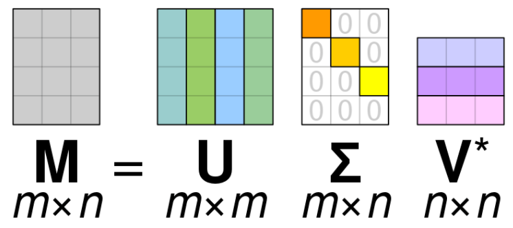
SVD Derivation:
Since $U$ is orthonormal ($U^T U = I$):
| PCA | SVD | |
|---|---|---|
| What it is | Finds axes of maximum variance | General matrix factorization |
| Data | Centered data matrices | Any matrix (rectangular, sparse) |
| Connection | PCA = SVD applied to mean-centered covariance matrix | More general than PCA |
| Goal | Dimensionality reduction (maximize variance) | Decomposition for various purposes |
11. Sequential Models
11.1 RNN vs LSTM vs GRU
image5.png
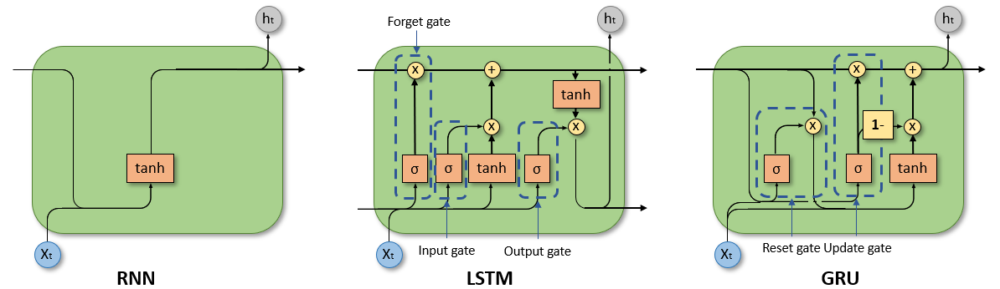
image84.png
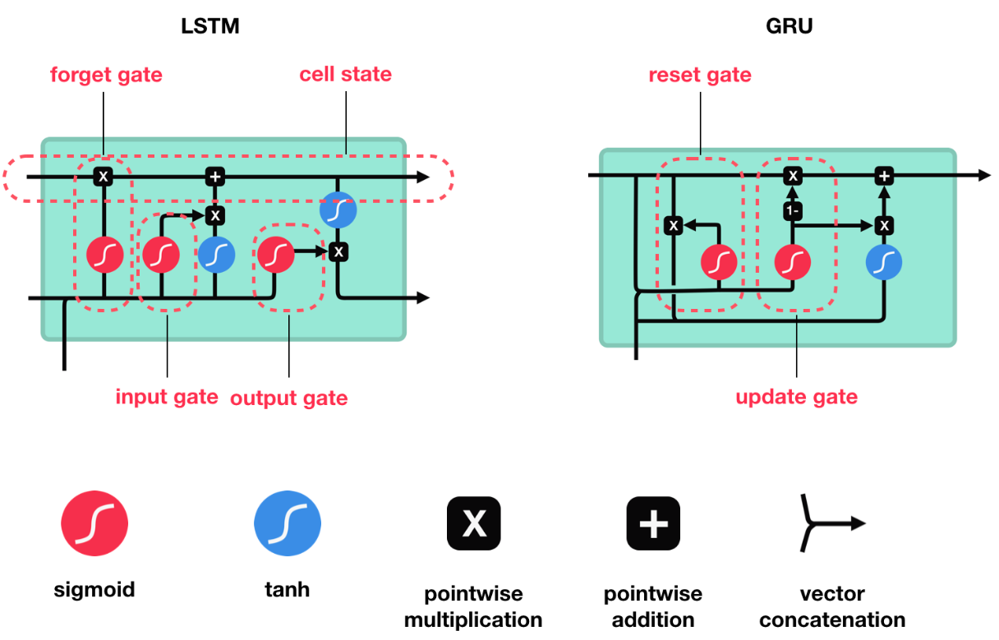
image31.gif
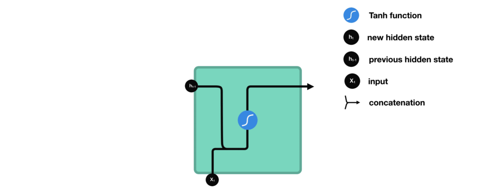
Recurrent Neural Networks (RNN)
Architecture: Simple cell with tanh, hidden state fed back as input.
Pros: - Simple architecture, easy to implement - Works well for short sequences
Cons: - Vanishing gradient problem — can't learn long-term dependencies - Limited memory for distant past - Training instability
Long Short-Term Memory (LSTM)
Three Gates:
| Gate | Purpose |
|---|---|
| Forget Gate | Decides what portion of previous cell state to discard |
| Input Gate | Decides what new information to store in cell state |
| Output Gate | Decides what part of cell state to output as hidden state |
Pros: - Designed for long-term dependencies - Mitigates vanishing gradient - Versatile across sequential tasks
Cons: - Complex architecture; more parameters - Computationally intensive - Longer training times
Gated Recurrent Unit (GRU)
Two Gates:
| Gate | Purpose |
|---|---|
| Reset Gate | Controls how much of previous hidden state to forget |
| Update Gate | Balances previous hidden state and new candidate state |
Pros: - Simpler than LSTM — fewer gates, fewer parameters - Faster training - Handles long-term dependencies well - Often matches LSTM performance
Cons: - May not capture all aspects of long-range dependencies as well as LSTM in some cases
Summary Comparison
| RNN | LSTM | GRU | |
|---|---|---|---|
| Memory | No explicit | Cell state + gates | Hidden state + 2 gates |
| Long-term deps | Poor | Excellent | Good |
| Complexity | Low | High | Medium |
| Training speed | Fast | Slow | Medium |
| Best use | Short sequences | Long sequences, complex tasks | Balanced; efficiency matters |
GRU vs LSTM: GRU controls flow of information without a separate memory unit — it exposes the full hidden state without memory cell control. GRU trains faster and performs better on less training data; LSTM should be preferred when longer sequences need to be remembered.
Pixel RNN: RNNs can be applied to image processing by treating pixels as sequential data.
11.2 Restricted Boltzmann Machines (RBM)
A variant of Boltzmann machines where neurons form a bipartite graph: - Two groups: visible units and hidden units - Connections only between groups (not within) - Enables efficient training via contrastive divergence (gradient-based)
11.3 Diagonal BiLSTM
image29.png
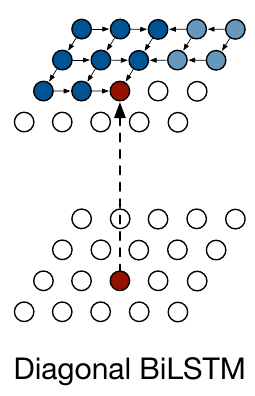
A variant where the LSTM processes input in a diagonal pattern, useful for image generation tasks (e.g., PixelCNN/PixelRNN variants).
12. NLP & Transformers
12.1 Word2Vec
Loss Functions:
- Skip-gram with Negative Sampling (SGNS) — most common
- Objective: Distinguish target word from noise words given a context word
- Maximizes probability of observed word-context pairs
-
Minimizes probability of randomly sampled noise words
-
CBOW with Negative Sampling
- Context words predict the target word
-
Inverted roles compared to Skip-gram
-
Hierarchical Softmax
- Binary tree over vocabulary
- Each word = path from root to leaf
- Maximizes probability of the correct path
- Reduces computational complexity vs full softmax
CBOW vs Skip-gram:
| CBOW | Skip-gram | |
|---|---|---|
| Task | Predicts target word from surrounding context words | Predicts context words from a single target word |
| Speed | Faster to train | Slower |
| Rare words | Better for frequent words | Better for rare words and phrases |
| When to use | Large datasets, common words | Rare words, small datasets |
GloVe vs FastText:
GloVe (Global Vectors for Word Representation): - Treats words as atomic units (whole-word embeddings only) - Captures global co-occurrence statistics across the entire corpus — how often words appear together globally - Contrast with Word2Vec which captures co-occurrence one window at a time
FastText: - Extension of Word2Vec — treats words as bags of character n-grams - Can generate embeddings for out-of-vocabulary (OOV) words by summing subword n-gram embeddings - Better for morphologically rich languages and rare words
| Word2Vec | GloVe | FastText | |
|---|---|---|---|
| Word unit | Whole word | Whole word | Character n-grams |
| Co-occurrence | One window at a time | Global corpus statistics | One window at a time |
| OOV handling | No | No | Yes (subword n-grams) |
| Best for | General use | Large corpora, global statistics | Rare/OOV words, morphological languages |
12.2 Positional Embeddings
Transformers have no inherent notion of word order — positional embeddings add this information.
- Word embedding + positional embedding = input to Transformer
- Position embeddings are fixed (same regardless of sequence length or input content)
- Values must stay small to avoid shifting word embeddings too far in embedding space
- Alternated sine and cosine at increasing frequencies for each dimension:
12.3 QKV Attention Mechanism
Q, K, V are derived from input embeddings via learned linear transformations:
| Matrix | Role |
|---|---|
| Query (Q) | What the current token is "looking for" — used to compute similarity with keys |
| Key (K) | What each token "offers" — used to compute attention scores with queries |
| Value (V) | The actual content to aggregate — weighted by attention scores |
Scaled Dot-Product Attention:
- $\sqrt{d_k}$ scaling prevents dot products from becoming too large (which causes softmax gradients to vanish)
12.4 Multi-Head Attention
Process: 1. Split input into 8 (or more) heads 2. Each head computes its own Q, K, V projections independently 3. Each head runs scaled dot-product attention → output $Z_i$ 4. Concatenate all $Z_i$ matrices 5. Multiply by learned weight matrix $W^O$ → final output
This allows the model to simultaneously attend to information from different representation subspaces at different positions.
12.5 Transformer Architecture
image83.png
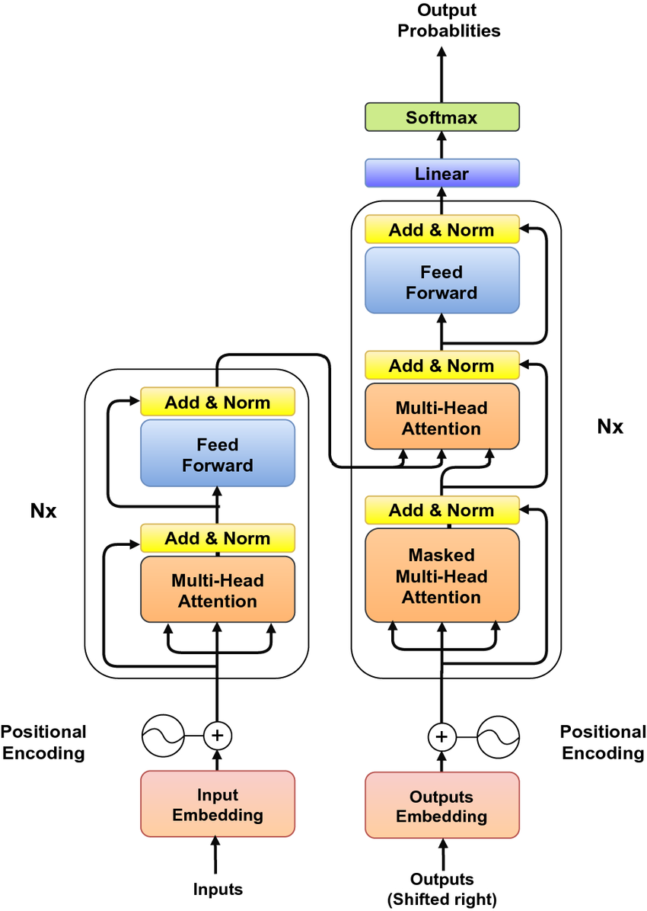
image11.png
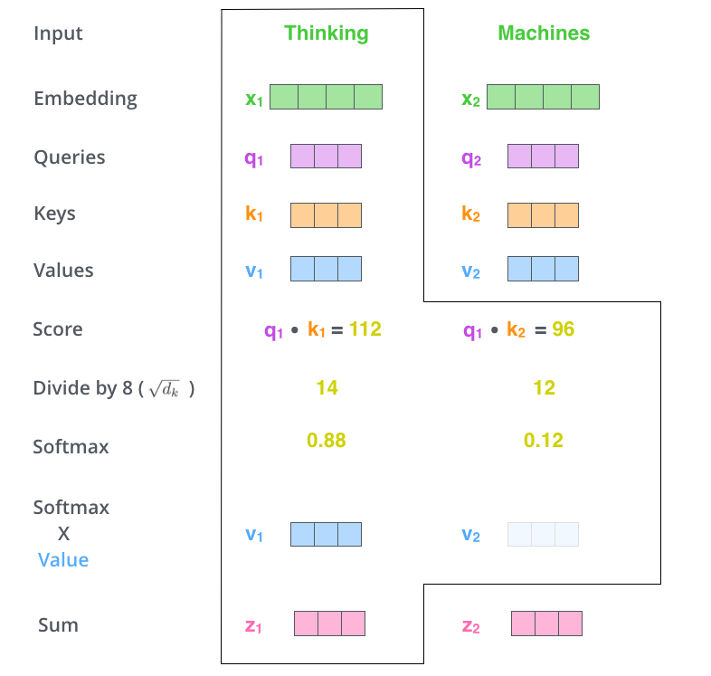
image60.png
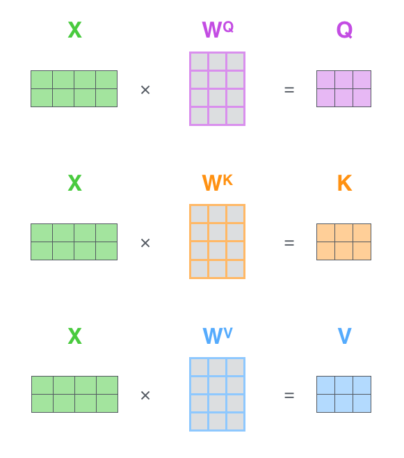
image1.png
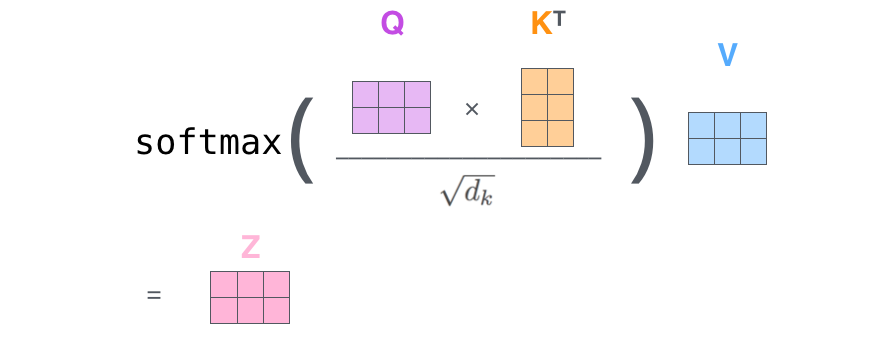
image28.png
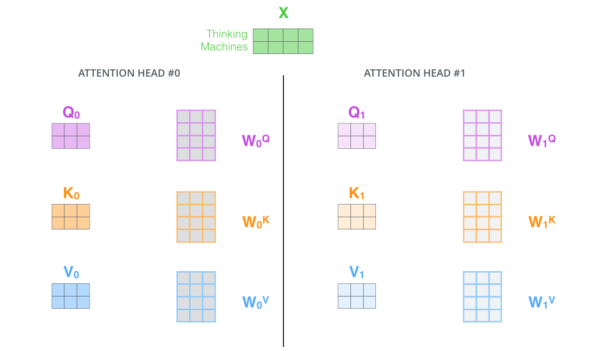
image48.png
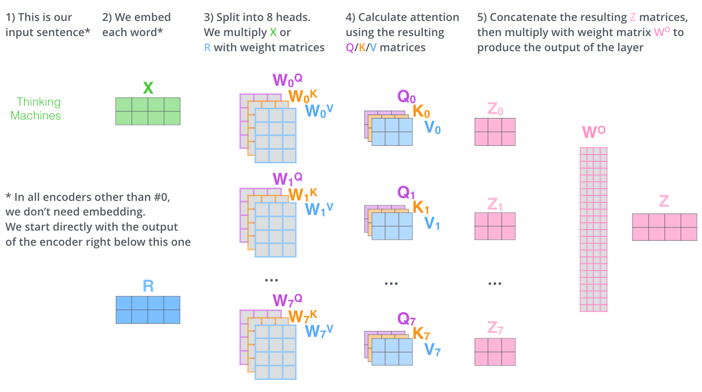
image8.png
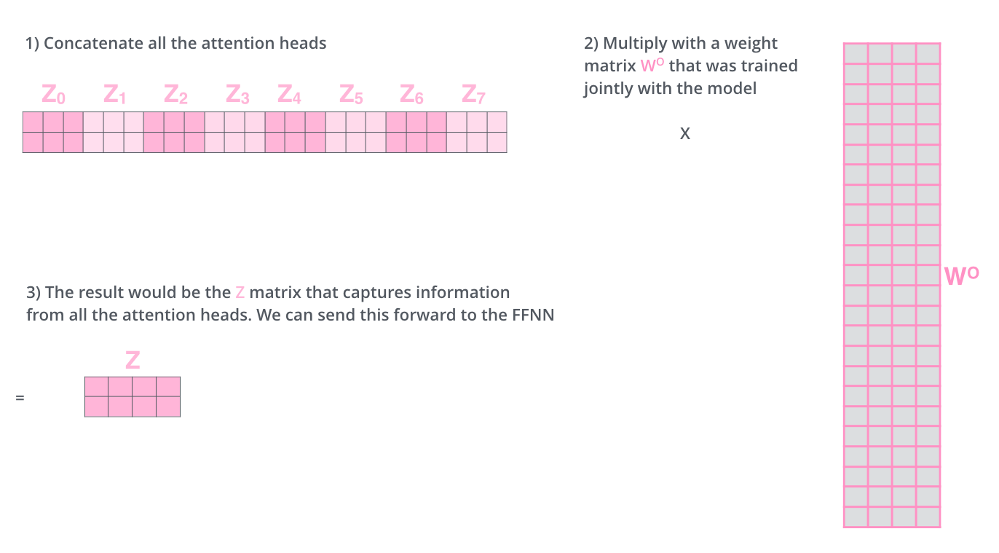
Encoder:
Input → Embedding + Positional Encoding → [Multi-Head Attention → Add & Norm → Feed Forward → Add & Norm] × N
Decoder:
Output (shifted right) → Embedding + Positional Encoding → [Masked MHA → Add & Norm → Cross-MHA → Add & Norm → Feed Forward → Add & Norm] × N → Linear → Softmax → Output Probabilities
12.6 Self Attention vs Cross Attention
| Self Attention | Cross Attention | |
|---|---|---|
| Q comes from | The same input (encoder input) | Decoder output |
| K, V come from | The same input | Encoder output |
| Purpose | Model relationships within a sequence | Model relationships between encoder and decoder sequences |
12.7 BERT vs GPT vs BART
| BERT | GPT | BART | |
|---|---|---|---|
| Architecture | Encoder-only | Decoder-only | Encoder-Decoder |
| Direction | Bidirectional | Unidirectional (left-to-right) | Both |
| Pre-training | Masked LM (MLM) + Next Sentence Prediction | Autoregressive (casual) language modeling | Span Corruption — masking entire spans of words |
| Fine-tuning | Task-specific layer added on top | Few-shot prompting; one-shot adaptation | Versatile for various NLP tasks |
| Best for | Classification, NER, Q&A, Word Classification | Text generation, Text completion, creative writing | Translation, Summarisation, Question & Answer |
| Original org | Google AI | OpenAI | Facebook AI |
12.8 KL Divergence
Measures how one probability distribution diverges from a reference distribution:
Applications: - Measuring difference between two distributions - In RLHF: comparing initial LM output vs fine-tuned LM output to prevent over-divergence - VAE: KL term regularizes latent space toward standard normal
12.9 LLaMA Pre-training & RLHF
Pre-training Loss: Standard cross-entropy loss over next-token prediction:
where $y_i$ is one-hot (correct token = 1, others = 0) and $\hat{y}_i$ is predicted probability distribution.
Training Process: 1. Model predicts next token given previous tokens 2. Cross-entropy loss is computed 3. Gradients propagated; weights updated via Adam/SGD variants 4. This enables learning statistical properties of language → fine-tunable for downstream tasks
RLHF Pipeline (LLaMA 2):
image51.jpg
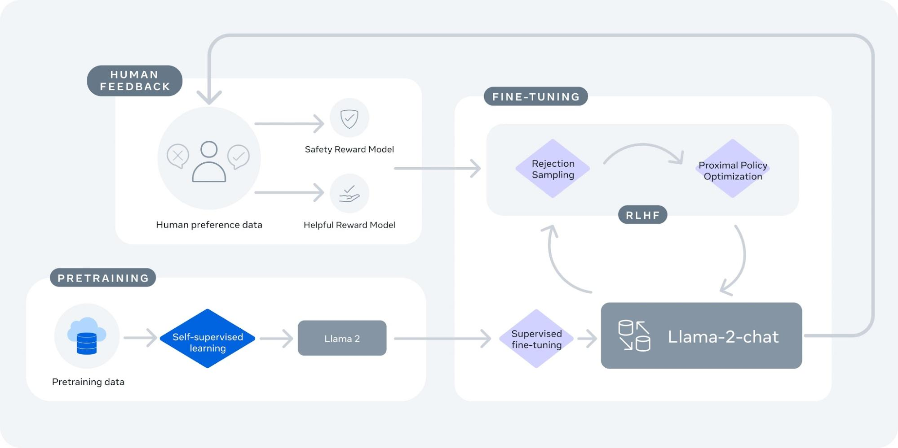
- Pre-training: Self-supervised learning → LLaMA 2 base
- Supervised Fine-Tuning (SFT): Human-labeled demonstrations
- Reward Modeling: Human preference data → reward model
- RLHF / PPO: Fine-tune with RL using reward signal → LLaMA-2-Chat
13. Advanced Topics
13.1 Expectation Maximization (EM)
An iterative algorithm to find parameters of latent variable models (e.g., Gaussian Mixture Models).
Key Idea: Given the number of Gaussians, find their parameters (mean and variance).
EM vs K-Means: - K-Means: hard assignment (each point belongs to exactly one cluster) - EM: soft assignment (each point has a probability of belonging to each cluster)
image54.png
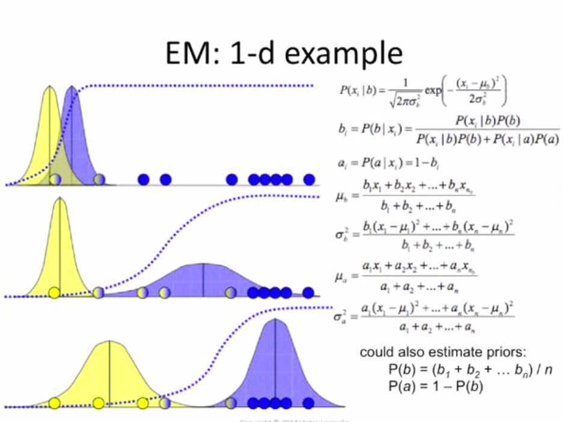
image30.png
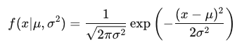
Steps: 1. Initialize: Random mean and variance for each Gaussian 2. E-step (Expectation): Compute probability of each point belonging to each Gaussian 3. M-step (Maximization): Update means and variances using weighted probabilities 4. Repeat until convergence
13.2 MLE vs EM
| MLE | EM | |
|---|---|---|
| Approach | Accumulates all data first, then finds best-fit model | Takes initial parameter guess, then iterates using observed + inferred data |
| Use case | Fitting one distribution to observed data | Fitting mixture of distributions when class labels are unknown |
| Example | Find μ, σ of a single Gaussian | Fit K Gaussians without knowing which cluster each point belongs to |
13.3 Knowledge Distillation
Transferring knowledge from a large teacher model to a smaller student model.
image18.jpg
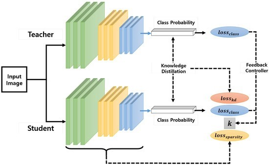
Process: - Teacher produces soft probability outputs (richer signal than hard labels) - Student learns from: class loss + KD loss (from teacher's soft outputs) + certainty loss - Result: Compact model that approximates the teacher's performance
13.4 Model Drift
Definition: Changes in a model's predictions over time due to changes in inputs, outputs, or ground truths.
Types:
| Type | Definition | Resolution |
|---|---|---|
| Prediction Drift | Model predictions change over time | Retrain or replace model |
| Concept Drift | Statistical properties of target variable shift | Reweight data, refit model |
| Data Drift | Statistical properties of input data change | Update model; monitor inputs |
| Upstream Drift | Changes in the data pipeline (missing values, feature cardinality) | Monitor data quality |
13.5 Model Calibration
Finding a unique set of model parameters that provide a good description of the system behaviour by comparing model predictions against actual measurements.
A well-calibrated model's predicted probabilities accurately reflect true likelihoods (e.g., events predicted at 70% probability actually occur ~70% of the time).
13.6 Exploration vs Exploitation
The fundamental tradeoff in reinforcement learning and bandit problems:
| Exploration | Exploitation | |
|---|---|---|
| Action | Try new/uncertain options to gain information | Use known best option to maximize reward |
| Risk | May be suboptimal short-term | May miss better long-term options |
Strategies: - ε-greedy: Decides what fraction ε of decisions to spend exploring (trying new options) and fraction (1-ε) exploiting the best known option - UCB (Upper Confidence Bound): Selects the action with the highest upper confidence bound $\mu + \beta\sigma$, where $\beta$ is a trade-off parameter. High $\beta$ favors exploration; $\beta \to 0$ approaches pure exploitation - Thompson Sampling: Draw one sample from each action's posterior distribution of expected reward. Rank actions based on sampled reward values and select the highest
13.7 Valence Shifters
Modifiers in sentiment analysis that alter the polarity or intensity of sentiment-bearing words:
| Type | Effect | Examples |
|---|---|---|
| Negations | Flip sentiment polarity | "not good", "never bad" |
| Intensifiers | Amplify sentiment strength | "very good", "extremely poor" |
| Diminishers | Weaken sentiment strength | "somewhat good", "barely bad" |
14. Amazon Applied Scientist Interview Topics
Expect to be asked about data-driven modeling, train/test protocols, error analysis, and statistical significance.
Supervised Learning - Linear regression, Logistic regression - Random Forest, Gradient Boosted Trees (GBT) - K-Nearest Neighbors (KNN), Naive Bayes - Kernel methods, Bayesian linear regression, Gaussian Processes (GP) - SGD, regularization (L1/L2)
Deep Neural Networks - Feedforward NNs, CNNs, Backpropagation - RNNs, LSTMs, GRUs
Unsupervised Learning - Clustering algorithms - Expectation Maximization (EM), Gaussian Mixture Models (GMMs) - Evaluation metrics for unsupervised tasks
Probabilistic Graphical Models (PGM) - Latent Dirichlet Allocation (LDA) - Belief Propagation - Gibbs Sampling - Variational Inference
Dimensionality Reduction - PCA, SVD - Spectral Clustering - Matrix Factorization
Sequential Models - Conditional Random Fields (CRFs) - Hidden Markov Models (HMMs) - NER (Named Entity Recognition), POS tagging
Reinforcement Learning - Explore-exploit tradeoff - Multi-armed bandits: ε-greedy, UCB, Thompson Sampling - Q-learning - Deep Q-Networks (DQNs)
References
Evaluation Metrics - Tour of Evaluation Metrics for Imbalanced Classification — Machine Learning Mastery - ROC and AUC, Clearly Explained! — StatQuest (YouTube)
Loss Functions - Loss Functions Overview — vinija.ai
Optimization - An Overview of Gradient Descent Optimization Algorithms — Sebastian Ruder
Backpropagation - Back Propagation is Very Simple — Medium (@14prakash)
Activation Functions - Activation Functions in Neural Networks — Towards Data Science
Feature Scaling - Feature Scaling in Machine Learning — Analytics Vidhya
Ensemble Methods - Implementing AdaBoost from Scratch — GeeksForGeeks
Dimensionality Reduction - Linear Discriminant Analysis for Machine Learning — KnowledgeHut
Reinforcement Learning - Upper Confidence Bound — JMLR Vol. 3 (Auer et al.)
Transformers - The Illustrated Transformer — Jay Alammar
BERT / XLNet - The Illustrated BERT — Jay Alammar - NLP: BERT & Transformer — Jonathan Hui - Two-Stream Self-Attention in XLNet — Towards Data Science
SVM - SVM with Kernels Lecture Notes — Northeastern University
RNNs / LSTMs - The Fall of RNN / LSTM — Towards Data Science - Disadvantages of RNN — Quora - What's the catch with LSTM — Data Science Stack Exchange
Hypothesis Testing - Hypothesis Testing — Stattrek
Interview Preparation - Deep Learning Interview Questions — Simplilearn - Deep Learning Interview Questions — JavaTPoint - Machine Learning Interview Questions — Springboard
Coding Practice (GeeksForGeeks) - Find Number of Islands - Longest Increasing Subsequence - Sort Array in Wave Form - Tree Traversals (Inorder, Preorder, Postorder) - Longest Common Subsequence - Partition Problem - Largest Sum Contiguous Subarray (Kadane's Algorithm) - Find First Repeated Character in a String
General ML Resources - Aman's AI Notes - Vinija AI Concepts - Vinija AI Concepts Library
Notes compiled from ML/DL interview preparation materials. Topics cover Statistics, Classical ML, Deep Learning, NLP/Transformers, and Advanced Methods.